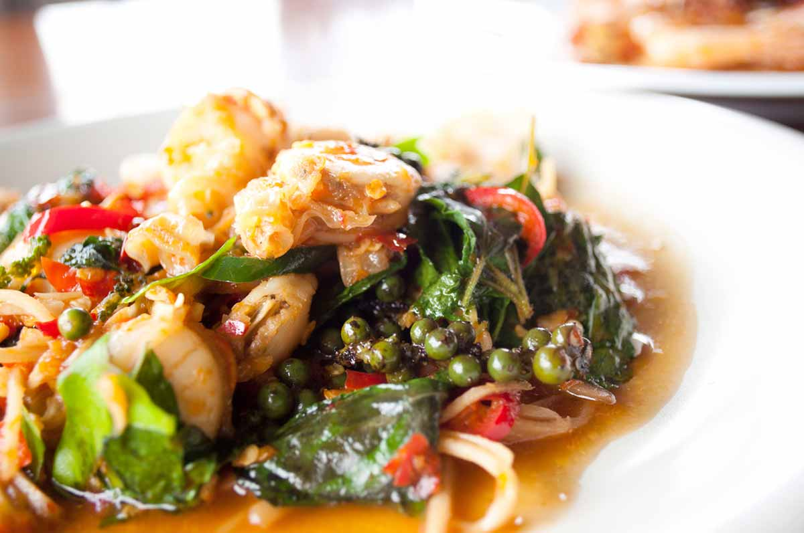

Vegetarian
V1) Tow Hoo Todd
Deep-fried tofu served with sweet chili sauce topped with ground peanut
V2) Tom Yum Hed
Hot and sour soup with lemongrass, lime leaf and mushroom
V3) Pad Gra Prow Tow Hoo
Sauteed tofu with basil leaf, chili, onion and bell peppers
V4) Yum Makua Yao
Grilled eggplant topped with spicy lime dressing and shredded red onion
V5) Pad Thai Jai
Traditional stir-fried rice noodles with egg, tofu, chive, bean sprout served with fresh bean sprout